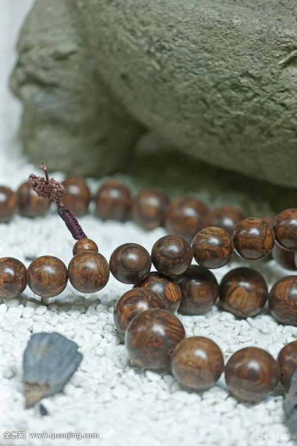
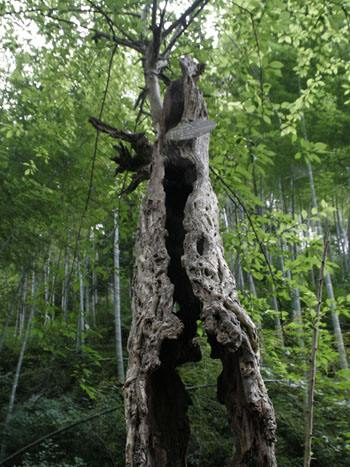

檀木介绍
TAN MU JIAN JIE
檀,紫檀紫檀是世界上最名贵的木材之一，也是佛家喜爱之物，故又称圣檀。
世界上仅存有沈檀、檀香、绿檀、紫檀、黑檀、红檀、金药檀等，紫檀紫檀是世界上最名贵的木材之一，也是佛家喜爱之物，所以人们常常把它作为吉祥物，以保平安吉祥。
檀木手环
XIN PIN FA BU

古老檀木树
GAO DUAN YUAN CHUANG


檀,紫檀紫檀是世界上最名贵的木材之一，也是佛家喜爱之物，故又称圣檀。
世界上仅存有沈檀、檀香、绿檀、紫檀、黑檀、红檀、金药檀等，紫檀紫檀是世界上最名贵的木材之一，也是佛家喜爱之物，所以人们常常把它作为吉祥物，以保平安吉祥。